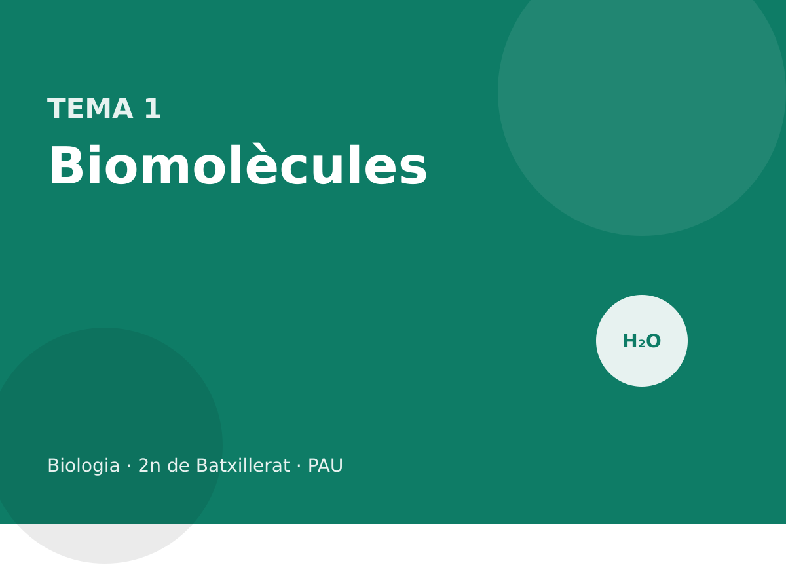

Biomolècules

Aigua, sals, glúcids, lípids, proteïnes, enzims i àcids nucleics: estructura i funció.
Què entra a la PAU
Del bloc «Les biomolècules i el metabolisme» entren aquí la identificació del grup (glúcid, lípid, pròtid o àcid nucleic) a partir de l’estructura, la relació entre estructura i funció, i la classificació per funcions: energètica, estructural, reguladora i portadora d’informació. Les orientacions diuen que no cal reconèixer el subtipus concret d’un glúcid o d’un lípid si l’enunciat només demana el grup; tot i això, les estructures d’aquest tema són les que permeten decidir el grup sense dubtar.
De les proteïnes entra tot el que és de batxillerat: aminoàcids, enllaç peptídic, quatre nivells d’estructura, relació amb la funció, i els enzims (especificitat i factors: substrat, temperatura, pH i inhibidors). L’aigua i les sals són saber de 1r, imbricat: sense elles no s’entén la membrana ni l’osmosi.
Els àcids nucleics es reprenen al tema 5, on les orientacions situen la funció i l’expressió. Aquí n’hi ha prou amb la composició química.
1.1 Aigua i sals minerals
L’aigua és una molècula angular, H–O–H. L’oxigen és més electronegatiu que l’hidrogen i estira els electrons dels enllaços: sobre l’oxigen queda una càrrega parcial negativa (δ−) i sobre cada hidrogen una càrrega parcial positiva (δ+). La molècula és polar. Entre l’hidrogen d’una molècula i l’oxigen d’una altra s’estableix un enllaç d’hidrogen, feble si se’n mira un de sol i decisiu quan n’hi ha milions.

D’aquesta estructura en surten les propietats que la biologia fa servir. És un bon dissolvent de substàncies iòniques i polars (sals, sucres, aminoàcids) i un mal dissolvent de les apolars (greixos). Té una calor específica alta: costa canviar-ne la temperatura, i per això esmorteeix els canvis tèrmics. La calor de vaporització també és alta: evaporar aigua a la superfície d’un organisme en treu molta calor. Les molècules se subjecten entre si (cohesió) i a altres superfícies polars (adhesió); així puja la saba bruta pel xilema. La densitat màxima és a 4 °C i el gel, amb els ponts d’hidrogen ordenats, és menys dens que l’aigua líquida i hi sura: a l’hivern el fons d’un llac no es congela del tot. L’aigua també és reactiu: entra a la hidròlisi i en surt a la condensació, i és el substrat de la fotòlisi.
Polar no vol dir iònica. L’aigua no està feta d’ions H⁺ i OH⁻ lliures. A 25 °C, només una fracció molt petita està dissociada: [H⁺][OH⁻] = 10⁻¹⁴. El pH és −log[H⁺]. A pH 7, [H⁺] = [OH⁻] = 10⁻⁷ mol·L⁻¹. Un tampó (bicarbonat, fosfat, proteïnes) esmorteix l’addició d’àcid o de base.
Les sals minerals es troben dissoltes, com ions (Na⁺, K⁺, Ca²⁺, Mg²⁺, Cl⁻, HCO₃⁻, HPO₄²⁻), o precipitades (carbonat de calci a closques i ossos, fosfat de calci a l’os, sílice a algunes algues). Dissoltes, mantenen la pressió osmòtica, participen en el potencial de membrana (Na⁺ i K⁺) i en la contracció (Ca²⁺), i són cofactors (Mg²⁺ de la clorofil·la i de molts enzims, Fe²⁺ de l’hemoglobina i dels citocroms, Zn²⁺ d’algunes polimerases). No són «aliment energètic»: no es catabolitzen per obtenir ATP.
Un problema diu que el pH d’un medi passa de 7 a 5. Quantes vegades ha canviat [H⁺]?
[H⁺] a pH 7 és 10⁻⁷; a pH 5 és 10⁻⁵. El quocient és 10⁻⁵ / 10⁻⁷ = 10². La concentració de protons és 100 vegades més gran. No és «dos punts més àcid» com si el pH fos una escala lineal.
De la polaritat a cada propietat
El pont d’hidrogen no és un enllaç covalent. És una atracció entre el δ+ d’un hidrogen ja unit a un àtom electronegatiu (O o N) i un parell d’electrons d’un altre O o N. A l’aigua, cada molècula en pot fer fins a quatre. Per això el gel és una xarxa oberta, menys densa que el líquid, i per això fondre gel o evaporar aigua demana molta energia: cal trencar molts ponts, no només separar molècules apolars.
| Propietat | Què la causa | On es nota |
|---|---|---|
| Dissolvent de iònics i polars | envolta els ions i els grups polars | citosol, sang, saba |
| Mal dissolvent d’apolars | els ponts entre aigües són més forts que l’atracció per un greix | els lípids fan gotes o bicapes |
| Calor específica alta | part de l’energia es gasta en trencar ponts, no en accelerar molècules | la temperatura d’un organisme canvia a poc a poc |
| Calor de vaporització alta | cal separar del tot les molècules | la suor refreda |
| Cohesió i adhesió | ponts entre molècules d’aigua i amb superfícies polars | ascens de la saba al xilema |
| Gel menys dens que el líquid | xarxa hexagonal oberta | el gel sura i aïlla l’aigua de sota |
Les sals dissoltes són ions. No tenen calories: no es poden oxidar per fer ATP. El que fan és elèctric i osmòtic. El Na⁺ i el K⁺ mantenen el potencial de membrana. El Ca²⁺ és el senyal de la contracció i de moltes exocitosis. El Mg²⁺ entra a la clorofil·la i al complex de l’ATP amb l’enzim. El Fe²⁺ és al grup hemo i als centres ferro-sofre de la cadena. Precipitades, les sals són esquelet: CaCO₃ a les closques, hidroxiapatita (fosfat de calci) a l’os.
El pH d’un suc gàstric és 2 i el del citosol, 7. Quantes vegades és més gran [H⁺] a l’estómac?
A pH 2, [H⁺] = 10⁻² mol·L⁻¹. A pH 7, [H⁺] = 10⁻⁷. El quocient és 10⁻² / 10⁻⁷ = 10⁵. Cent mil vegades, no «cinc vegades». El pH és logarítmic: un punt són deu vegades.
Una dissolució de glucosa 0,30 mol·L⁻¹ i una de NaCl 0,15 mol·L⁻¹ es posen en contacte a través d’una membrana permeable només a l’aigua. Cap a on va l’aigua, aproximadament?
La glucosa no es dissocia: 0,30 mol de partícules per litre. El NaCl es dissocia en Na⁺ i Cl⁻: 0,15 × 2 = 0,30 mol de partícules per litre. Les dues cares tenen una concentració osmòtica semblant i el flux net és proper a zero. Si s’hagués comparat amb NaCl 0,30 mol·L⁻¹, l’aigua aniria cap a la sal, que té el doble de partícules.
Per què un llac es glaça per dalt i no sencer, i què hi té a veure el fet que la densitat màxima de l’aigua sigui a 4 °C?
En refredar-se fins a 4 °C l’aigua es fa més densa i baixa al fons. Per sota de 4 °C es fa menys densa i es queda a la superfície, on acaba glaçant-se. El gel, encara menys dens, sura i aïlla. El fons pot continuar líquid i amb vida. Si el gel fos més dens, s’enfonsaria i el llac es congelaria de baix a dalt.
Un tampó no impedeix que el pH canviï: en redueix el canvi. El parell bicarbonat / àcid carbònic de la sang n’és l’exemple. Si s’afegeix un àcid, el H⁺ es combina amb HCO₃⁻ i no queda lliure. Si s’afegeix una base, l’àcid carbònic cedeix H⁺. El pH es mou poc mentre quedi parell. Fora del rang del parell, el tampó s’esgota i el pH cau o puja de cop. Les proteïnes també tamponen, pels grups laterals ionitzables.
Es compara la pujada de temperatura de 100 g d’aigua i de 100 g d’oli en aportar la mateixa energia. L’aigua puja menys. Quina propietat és, i per què no es diu «calor de vaporització»?
És la calor específica: energia per pujar un grau, sense canvi d’estat. La calor de vaporització és l’energia per evaporar, a temperatura constant. Aquí no hi ha evaporació; hi ha escalfament. La causa, en l’aigua, és que part de l’energia trenca ponts d’hidrogen en lloc d’accelerar molècules.
Una cèl·lula té [K⁺] interior alt i [Na⁺] interior baix. Aquests ions són sals precipitades o dissoltes, i aporten energia química?
Dissoltes. No estan en un cristall. No s’oxiden per fer ATP: l’energia del gradient és potencial electroquímic, que la cèl·lula ha pagat abans amb la bomba, no una reserva com el glicogen. Confondre el gradient amb un nutrient és l’error.
1.2 Glúcids
Els glúcids (hidrats de carboni, sucres) responen aproximadament a Cn(H2O)n. Porten diversos grups hidroxil i un grup carbonil: aldehid (aldoses) o cetona (cetoses). Es classifiquen pel nombre de monosacàrids units.
Els monosacàrids de més pes a la PAU són les pentoses (5 carbonis: ribosa i desoxiribosa, als àcids nucleics) i les hexoses (6 carbonis: glucosa, fructosa, galactosa). En dissolució, les pentoses i les hexoses tanquen un anell. La glucosa forma un anell de sis (piranosa). El carboni que era el carbonil passa a ser el carboni anomèric, el C1. Si l’OH d’aquest carboni queda cap avall a la representació de Haworth de la D-glucosa, l’isòmer és l’alfa; si queda cap amunt, és el beta. Els altres substituents de la D-glucosa no canvien: OH del C2 avall, del C3 amunt, del C4 avall, i el CH2OH del C5 amunt.

Dos monosacàrids s’uneixen per un enllaç glicosídic, amb pèrdua d’aigua. L’enllaç es descriu amb dues dades: l’anòmer (α o β) i quins carbonis queden lligats. La maltosa és α-D-glucosa-(1→4)-D-glucosa. La lactosa és β-D-galactosa-(1→4)-D-glucosa: la galactosa és l’epímer en C4 de la glucosa, i per això l’OH del C4 mira cap amunt. La sacarosa és α-D-glucosa-(1→2)-β-D-fructosa: els dos carbonis anomèrics queden ocupats i la sacarosa no és reductora. Maltosa i lactosa sí que ho són, perquè conserven un anomèric lliure. La fructosa del disacàrid és la β-D-fructofuranosa, un anell de cinc.


Els polisacàrids de reserva són l’amilosa i l’amilopectina (el midó vegetal) i el glicogen (animals i fongs). L’amilosa és una cadena d’α(1→4), helicoïdal. L’amilopectina i el glicogen hi afegeixen ramificacions α(1→6); el glicogen en porta més. La cel·lulosa és β(1→4): les cadenes queden estirades, s’enllacen per ponts d’hidrogen i formen la paret vegetal. La quitina, a la paret dels fongs i a l’exosquelet dels artròpodes, és un polímer de N-acetilglucosamina amb enllaços β.
La funció depèn de l’enllaç, no només de la fórmula C6H12O6. α(1→4) es pot mobilitzar (reserva). β(1→4) fa fibres (estructura). Els enzims que trenquen l’un no trenquen l’altre: nosaltres digerim el midó i no la cel·lulosa.
Funcions que cal saber assignar: energètica (glucosa, midó, glicogen), estructural (cel·lulosa, quitina, ribosa dins l’RNA) i de reconeixement (oligosacàrids del glicocàlix). Els glúcids no són el material genètic.
Us donen tres molècules. La A és una cadena llarga de glucoses unides per β(1→4). La B és glicerol esterificat amb tres àcids grassos. La C és una cadena d’aminoàcids. Digueu a quin grup pertany cadascuna i quina és de reserva energètica en animals.
A és un glúcid (cel·lulosa): estructural, no de reserva animal. B és un lípid saponificable (triacilglicerol): reserva, però típica del teixit adipós, no «la» reserva glucídica. C és un pròtid. Cap de les tres és el glicogen. Si la pregunta hagués estat «quina pot ser reserva en animals», el triacilglicerol sí que ho és; la cel·lulosa, no. Cal llegir el verb de l’enunciat.
Reserva i estructura no són el mateix enllaç
| Polisacàrid | Enllaç | On | Funció |
|---|---|---|---|
| Amilosa | α(1→4) | midó vegetal | reserva |
| Amilopectina i glicogen | α(1→4) i ramificacions α(1→6) | plantes / animals i fongs | reserva; el glicogen és més ramificat |
| Cel·lulosa | β(1→4) | paret vegetal | estructura |
La maltosa és el disacàrid de dues glucoses amb α(1→4). La sacarosa uneix glucosa i fructosa pels dos carbonis anomèrics (α1→β2) i per això no redueix. La lactosa és galactosa β(1→4) glucosa i sí que redueix. A la prova n’hi ha prou amb decidir el grup i, si l’enunciat dona l’enllaç, la funció.
Una cadena de glucoses amb enllaços β(1→4) es pot fer servir com a reserva muscular?
No. És cel·lulosa. La reserva animal és el glicogen, amb enllaços α. Els enzims que trenquen l’α no trenquen el β.
Com es classifica un glúcid a la prova
| Molècula | Unitats | Enllaç | Redueix? | Funció que cal dir |
|---|---|---|---|---|
| Glucosa, fructosa, galactosa | 1 hexosa | — | sí | energia; la glucosa és el combustible de la glucòlisi |
| Ribosa / desoxiribosa | 1 pentosa | — | sí | dins l’RNA / el DNA |
| Maltosa | 2 glucoses | α(1→4) | sí | producte de la digestió del midó |
| Lactosa | galactosa + glucosa | β(1→4) | sí | sucre de la llet |
| Sacarosa | glucosa + fructosa | α1↔β2 | no | transport a la saba elaborada |
| Amilosa | moltes glucoses | α(1→4) | — | reserva vegetal, sense ramificar |
| Amilopectina, glicogen | moltes glucoses | α(1→4) i α(1→6) | — | reserva; el glicogen és més ramificat |
| Cel·lulosa | moltes glucoses | β(1→4) | — | paret vegetal |
| Quitina | N-acetilglucosamina | β | — | paret fúngica i exosquelet |
Un sucre redueix el reactiu de Fehling (o de Tollens) si té un carboni anomèric lliure, capaç d’obrir-se i mostrar el carbonil. A la sacarosa els dos anomèrics estan ocupats en l’enllaç: no redueix. A la maltosa i a la lactosa en queda un de lliure: sí que redueixen. A la PAU n’hi ha prou amb aquest criteri; no cal memoritzar el color del precipitat si l’enunciat no el dona.
A la Haworth de la D-glucopiranosa el CH₂OH del C5 va sempre cap amunt. Això no decideix α o β. El que ho decideix és l’OH del C1: avall és α (trans respecte del CH₂OH), amunt és β (cis). L’oxigen de l’anell és un vèrtex, entre el C5 i el C1, no un àtom al centre de l’hexàgon.
Us donen una cadena de glucoses amb enllaços β(1→4) i una altra amb α(1→4) i ramificacions α(1→6). Digueu el nom de cadascuna, on es troba i si un humà la pot fer servir com a nutrient.
La primera és cel·lulosa: paret de les cèl·lules vegetals. Els nostres enzims digestius no trenquen el β(1→4); no és nutrient per a nosaltres (els remugants se’n surten amb microorganismes). La segona, si és molt ramificada i animal, és glicogen; si ho és menys i vegetal, amilopectina. Les dues són reserva i sí que les digerim, perquè l’amilasa trenca l’α(1→4).
Per què el glicogen és més ramificat que l’amilopectina, si tots dos són reserva de glucosa?
Cada ramificació és un extrem no reductor per on la glucogen fosforilasa pot començar a alliberar glucosa-1-fosfat. Més ramificacions volen dir més extrems alhora i una mobilització més ràpida, que és el que necessita el múscul. La planta no té tanta pressa i l’amilopectina en porta menys. La funció de reserva és la mateixa; la velocitat, no.
Una molècula té fórmula aproximada Cn(H2O)n, diversos OH i un grup aldehid. És un lípid, un monosacàrid o un aminoàcid?
Monosacàrid (una aldosa). Un aminoàcid portaria N. Un lípid seria pobre en oxigen i insoluble en aigua. La fórmula «hidrat de carboni» és una pista, no una definició estricta: la desoxiribosa en té un oxigen menys i continua sent un glúcid.
La prova sovint dona tres fórmules i demana el grup, no el nom. El criteri curt és: diversos OH i un carbonil, glúcid; cadenes llargues d’hidrocarbur, lípid; un N en un grup amino i un carboxil, aminoàcid o pèptid; una base, un sucre i un fosfat, nucleòtid. Dins dels glúcids, el nombre d’unitats separa mono, di i poli, i l’enllaç α o β separa reserva i estructura.
La sacarosa no dóna positiu amb Fehling i la maltosa sí. Les dues són disacàrids de mida semblant. On és la diferència estructural?
A la sacarosa l’enllaç ocupa el carboni anomèric de la glucosa i el de la fructosa. No queda cap anomèric lliure que pugui obrir-se i mostrar el carbonil. A la maltosa l’enllaç és α(1→4): el C1 d’una glucosa queda lliure. El test no mesura la mida; mesura aquest carboni.
Per què la cel·lulosa fa fibres rectes i l’amilosa una hèlix, si totes dues són cadenes de glucosa?
Per la geometria de l’enllaç. El β(1→4) gira cada glucosa 180° respecte de l’anterior i la cadena queda estirada, bona per fer ponts d’hidrogen amb la cadena veïna. L’α(1→4) corba la cadena i en surt una hèlix, bona per empaquetar reserva i dolenta per fer una fibra. L’enzim que encaixa en una geometria no encaixa en l’altra.
Es donen tres polisacàrids de glucosa. Un no el digerim, un és la reserva de les plantes i un és la reserva del múscul. Poseu el nom, l’enllaç decisiu i el compartiment o el teixit.
El que no digerim és la cel·lulosa, β(1→4), a la paret vegetal. La reserva de les plantes és el midó (amilosa i amilopectina), α(1→4) i, en l’amilopectina, ramificacions α(1→6), als plastidis. La reserva del múscul és el glicogen, els mateixos enllaços amb més ramificacions, al citosol. El fet de ser glucosa no decideix la funció. La decideix l’enllaç i el lloc.
1.3 Lípids
Els lípids no es defineixen per un monòmer únic sinó per ser insolubles en aigua i solubles en dissolvents orgànics. Es parteixen en dos grups. Els saponificables porten àcids grassos i, amb una base forta, fan sabó (una sal de l’àcid gras). Els insaponificables no en porten.
Un àcid gras és una cadena hidrocarbonada amb un grup carboxil. Si només té enllaços simples, és saturat i la cadena queda recta; si té un o més dobles enllaços cis, és insaturat i fa un colze. A temperatura ambient, els saturats llargs tendeixen a ser sòlids (molts greixos animals) i els insaturats, líquids (molts olis vegetals). Això és una tendència, no una llei absoluta.
El triacilglicerol (triglicèrid) és glicerol amb tres àcids grassos units per enllaços èster. És apolar, es guarda en vacúols o en el teixit adipós i rendeix més del doble d’energia per gram que el glicogen, a més de no retenir aigua. No forma membranes.
El fosfolípid és glicerol amb dos àcids grassos i, al tercer carboni, un fosfat que sovint porta un grup polar (colina, serina, etanolamina). El cap (glicerol + fosfat + grup) és hidròfil; les cues, hidròfobes. La molècula és amfipàtica. En aigua les cues fugen de l’aigua i els caps hi contacten: es forma una bicapa, la base de les membranes. Les ceres són èsters d’un àcid gras i un alcohol llarg; impermeabilitzen fulles, plomes i pèl.

Entre els insaponificables, els esteroides tenen quatre anells fusionats. El colesterol modula la fluïdesa de la membrana animal i és precursor de sals biliars, vitamina D i hormones esteroides (sexuals, cortisol). Els terpens, derivats de l’isoprè, inclouen pigments com el carotè. Ni el colesterol ni els terpens es saponifiquen.
Dir que «tots els lípids fan membranes» o que «el colesterol és un greix». El colesterol és un esteroide insaponificable. Qui fa la bicapa són els fosfolípids (i, en arqueus, altres lípids de membrana).
Saponificables i insaponificables
| Porta àcids grassos? | Exemples | Funció a batxillerat | |
|---|---|---|---|
| Àcids grassos | ells mateixos | palmític (saturat), oleic (insaturat) | peces dels lípids saponificables; combustible |
| Triacilglicerols | tres | greixos i olis | reserva. No fan membranes |
| Fosfolípids | dos, més un fosfat | fosfatidilcolina | bicapa |
| Ceres | un, unit a un alcohol llarg | cutícula de la fulla | impermeabilitzar |
| Esteroides | no | colesterol, hormones sexuals, cortisol | membrana i senyal |
| Terpens | no | carotens, algunes vitamines liposolubles | pigments, precursors |
Saponificar és hidrolitzar els èsters amb una base forta i obtenir la sal de l’àcid gras, que és el sabó. Si no hi ha àcid gras, no hi ha sabó: el colesterol és insaponificable encara que sigui un lípid de membrana. Dir «greix» del colesterol és l’error de nomenclatura més habitual.
La fluïdesa de la bicapa puja amb la temperatura i amb els dobles enllaços cis, que fan un colze i impedeixen que les cues s’empaquetin. El colesterol fa de tampó: a temperatura alta limita el moviment de les cues i a temperatura baixa evita que es rigiditzin del tot. No és ni «sempre fluidifica» ni «sempre endureix».
Tres molècules: A, glicerol amb tres cues saturades; B, glicerol amb dues cues i un fosfat unit a colina; C, quatre anells i una cadena curta, sense àcid gras. Quina fa bicapes, quina és reserva i quina és insaponificable?
B fa bicapes: és un fosfolípid, amfipàtic. A és un triacilglicerol, reserva, apolar, saponificable. C és un esteroide (el colesterol encaixa en aquesta descripció), insaponificable. C modula la membrana però no en forma la bicapa.
Per què un gram de triacilglicerol dona més energia que un gram de glicogen, i per què a més no arrossega aigua?
Les cues són hidrocarburs molt reduïts: en oxidar-les s’alliberen més electrons per gram que oxidant un sucre, ja parcialment oxidat. I com que són apolars, no s’hidraten. El glicogen, ple d’OH, reté uns dos grams d’aigua per gram de polisacàrid. La reserva grassa és més lleugera per a la mateixa energia, que és el que li convé a un animal que s’ha de moure.
Un oli es posa al frigorífic i es torna tèrbol, mentre un altre continua líquid. Quina diferència d’àcids grassos ho explica, sense convertir-ho en una llei absoluta?
El que es tèrbola té més proporció de cadenes saturades i llargues, que s’empaqueten i solidifiquen abans. El que continua líquid té més insaturacions cis. És una tendència: la longitud també hi compta, i una sola mostra no identifica l’espècie vegetal.
Un experiment escalfa una membrana i mesura la fluïdesa. Després se’n treu el colesterol i es repeteix a la mateixa temperatura alta. La fluïdesa puja. Quina funció del colesterol, de les dues que té, s’ha vist aquí?
La de limitar el moviment quan la temperatura és alta. L’altra funció, evitar la rigidificació a baixa temperatura, aquest experiment no la mesura: només hi ha una temperatura, i és alta. No es pot concloure que el colesterol «sempre endureix» ni «sempre fluidifica».
Un sabó es fa bullint greix amb NaOH. Quines molècules del greix reaccionen, i per què un esteroide de la mateixa mostra no en faria?
Reaccionen els èsters dels triacilglicerols: s’hidrolitzen i l’àcid gras queda com a sal sòdica, el sabó. L’esteroide no té àcid gras esterificat. Es queda a la fracció que no saponifica. La prova fa servir aquest fet per classificar, no per demanar el protocol industrial.
1.4 Proteïnes i l’enllaç peptídic
Els pròtids inclouen aminoàcids, pèptids i proteïnes. Un aminoàcid proteic té un carboni α unit a un H, un grup carboxil, un grup amino i una cadena lateral R. N’hi ha vint de codificats. A pH proper a 7 el carboxil està desprotonat (COO⁻, pKa al voltant de 2) i l’amino protonat (NH₃⁺, pKa al voltant de 9–10): la forma és un zwitterió, amb càrrega neta que depèn també de R. No és correcte dibuixar-los com a NH2–CHR–COOH a pH fisiològic.

L’enllaç peptídic es forma per condensació entre el carboxil d’un aminoàcid i l’amino del següent, i es perd aigua. És un enllaç amida, pla, amb caràcter parcial de doble enllaç: no gira lliurement i el més habitual és la forma trans. La cadena té un extrem N (amino lliure) i un extrem C (carboxil lliure). Per conveni s’escriu N → C. Un oligopèptid té pocs residus; a partir d’unes desenes es parla de polipèptid. «Proteïna» es reserva per a la cadena o el conjunt de cadenes amb estructura tridimensional i funció.
L’estructura primària és la seqüència. La secundària és el plegament local de l’esquelet, estabilitzat per ponts d’hidrogen entre N–H i C=O de l’enllaç peptídic, no entre les cadenes R. A l’hèlix α, el pont uneix el residu i amb el i+4 i la cadena fa una hèlix dextrogira. Al full β, els ponts uneixen trams veïns, paral·lels o antiparal·lels. La terciària és el plegament global d’una cadena: interaccions hidròfobes de les R apolars cap a l’interior (en medi aquós), ponts d’hidrogen, ponts iònics i, si hi ha cisteïnes, ponts disulfur (covalent, –S–S–). La quaternària és l’associació de dues o més cadenes (l’hemoglobina en té quatre). Moltes proteïnes no en tenen.

La funció depèn de la forma. L’hemoglobina transporta O2 perquè l’hemo, amb Fe²⁺, queda col·locat dins el plegament. Els anticossos reconeixen un epítop perquè la regió variable encaixa. El col·lagen fa fibres. Una mutació d’un sol residu pot desfer el plegament o el centre actiu. La desnaturalització (calor, pH extrem, detergents) perd la funció sense trencar els enllaços peptídics. De vegades, si es treu l’agent, la cadena es replega sola: la informació del plegament és a la seqüència.
Una proteïna perd l’activitat a 70 °C i, en refredar-se, no la recupera. S’ha hidrolitzat?
No. La hidròlisi trencaria enllaços peptídics i faria aminoàcids lliures; caldria un enzim o un àcid fort una estona llarga. Aquí s’ha desnaturalitzat. Que no es renaturalitzi només vol dir que el replegament no ha estat espontani en aquelles condicions, no que la primària hagi canviat.
Quin enllaç aguanta cada nivell
| Nivell | Què és | Enllaços que el mantenen | Es perd en desnaturalitzar? |
|---|---|---|---|
| Primària | seqüència, escrita N → C | enllaç peptídic (amida, covalent) | no |
| Secundària | hèlix α i full β | ponts d’hidrogen de l’esquelet, no de les cadenes R | sí |
| Terciària | plegament d’una cadena | hidròfobs, ponts d’hidrogen i iònics de les R, ponts disulfur | sí; el disulfur només si es redueix |
| Quaternària | dues o més cadenes | les mateixes interaccions febles, i de vegades disulfur | sí |
L’enllaç peptídic és pla perquè el nitrogen i el carbonil comparteixen electrons: té caràcter parcial de doble enllaç i gairebé no gira. El gir del plegament és als enllaços del carboni α. Per això una cadena no és un fil flexible a cada àtom. A pH 7 els extrems són NH₃⁺ i COO⁻, no NH₂ i COOH. Dibuixar la forma neutra és un error de pH, no de connectivitat.
Entre dos aminoàcids es perd una molècula d’aigua. Un pèptid de n residus té n − 1 enllaços peptídics i, en formar-se, ha perdut n − 1 aigües. Hidrolitzar-lo les torna. La desnaturalització no hidrolitza: la cadena continua sencera i, si les condicions ho permeten, es pot replegar perquè la informació és a la seqüència.
Una proteïna de 100 aminoàcids es bull. Després es mesura i continua essent una sola cadena de 100 residus, però ja no uneix el substrat. Què s’ha trencat i què no?
No s’han trencat els enllaços peptídics: la primària és la mateixa i no han aparegut pèptids petits. S’ha perdut el plegament (secundària, terciària i, si n’hi havia, quaternària) i, amb ell, la forma del centre actiu. És desnaturalització, no hidròlisi.
L’hemoglobina té quatre cadenes i un grup hemo amb Fe²⁺ a cadascuna. Quins nivells d’estructura hi són, i el ferro és un aminoàcid?
Hi ha primària, secundària i terciària de cada cadena, i quaternària perquè n’hi ha quatre. El ferro no és un aminoàcid: és part del grup prostètic hemo, no proteic. Sense el Fe²⁺ no uneix O₂, encara que la globina estigui ben plegada. Si el ferro passa a Fe³⁺ (metahemoglobina) tampoc no transporta bé l’oxigen.
Dos residus de cisteïna formen un pont disulfur. És un pont d’hidrogen? Es desfà escalfant suaument?
No. És un enllaç covalent –S–S–. Els ponts d’hidrogen es trenquen amb calor moderada o amb urea. El disulfur demana un reductor. Per això algunes proteïnes extracel·lulars, riques en disulfurs, aguanten millor el medi de fora que una proteïna només plegada amb interaccions febles.
Un pèptid té 12 aminoàcids. Quants enllaços peptídics té, quantes molècules d’aigua s’han perdut en formar-lo, i quin extrem s’escriu a l’esquerra?
11 enllaços i 11 aigües: sempre un menys que el nombre de residus, perquè cada enllaç uneix dos residus i el primer no s’uneix a un de previ. A l’esquerra, l’extrem amino (N). A la dreta, el carboxil (C). Escriure’l al revés canvia quin residu es considera el primer.
La cisteïna i la serina tenen totes dues un grup que pot fer ponts. Per què només les cisteïnes fan un enllaç covalent entre cadenes laterals?
Perquè el grup tiol (–SH) de dues cisteïnes es pot oxidar a disulfur (–S–S–), covalent. El OH de la serina fa ponts d’hidrogen, febles, no un enllaç covalent equivalent en les condicions de la cèl·lula. Per això una proteïna rica en cisteïna pot aguantar condicions que en desfan una de plegada només amb ponts d’hidrogen.
1.5 Enzims
Els enzims són proteïnes (o, en alguns casos, RNA catalític: ribozims) que acceleren una reacció abaixant l’energia d’activació. No desplacen l’equilibri i no es consumeixen: en surten igual que hi han entrat. El substrat es fixa al centre actiu, una butxaca amb una forma i una càrrega complementàries. L’ajust induït precisa la imatge de «clau i pany»: el centre es tanca una mica sobre el substrat. L’especificitat pot ser d’un sol substrat o d’un grup (l’hexocinasa admet diverses hexoses; la glucocinasa, pràcticament només glucosa).
La velocitat creix amb la concentració de substrat fins que els centres estan ocupats: s’arriba a Vmax. La Km és la concentració de substrat a la qual la velocitat és la meitat de Vmax. Una Km baixa vol dir que l’enzim treballa de pressa ja amb poc substrat; no és «l’afinitat» en sentit estricte en tots els mecanismes, però a batxillerat es llegeix així. La temperatura accelera la reacció fins a l’òptim; per damunt, desnaturalitza. Cada enzim té un pH òptim (la pepsina, àcid; la tripsina, bàsic; molts enzims cel·lulars, prop de 7).
Un inhibidor competitiu s’assembla al substrat i ocupa el centre actiu. Es venç pujant el substrat: Vmax no canvia i la Km aparent puja. Un inhibidor no competitiu es lliga a un altre lloc, deforma el centre i baixa Vmax; el substrat no el desplaça. Els cofactors són ions o molècules no proteiques necessàries per a l’activitat. Si la molècula orgànica queda forta unida, se’n diu grup prostètic (l’hemo). Les vitamines del complex B són, en bona part, precursors de coenzims (la niacina, de NAD⁺; la riboflavina, de FAD).
Regular el metabolisme, a la pràctica, és regular enzims: canviar-ne la quantitat (expressió gènica) o l’activitat (inhibidors, activadors, modificació covalent, efecte al·lostèric). L’al·lostèria, en què una molècula es lliga fora del centre actiu i canvia l’afinitat, és el nivell just de batxillerat; no cal el model de Monod.
La cinètica de Michaelis-Menten i el gràfic de Lineweaver-Burk no es demanen. Sí que es demana llegir un gràfic velocitat-substrat o velocitat-temperatura i dir què passa amb Vmax i, si l’enunciat en parla, amb la Km.
Un gràfic mostra la velocitat d’un enzim en funció de la concentració de substrat, i una segona corba obtinguda amb el mateix enzim en presència d’un fàrmac. Les dues corbes arriben al mateix sostre, però la segona necessita més substrat per assolir la meitat d’aquella velocitat màxima. De quin tipus d’inhibició es tracta? Justifiqueu-ho amb el que es llegeix al gràfic.
És una inhibició competitiva. El sostre comú vol dir que la velocitat màxima, Vmax, no ha canviat: amb prou substrat, l’enzim arriba a la mateixa velocitat que sense fàrmac. El fet que calgui més substrat per arribar a Vmax/2 vol dir que la Km aparent ha pujat. Això encaixa amb un fàrmac que ocupa el centre actiu i que el substrat pot desplaçar. Si el sostre hagués baixat i no es recuperés en augmentar el substrat, la inhibició no seria competitiva.
Quan llegiu un gràfic, mireu primer si les corbes arriben al mateix sostre. Si la corba amb inhibidor assoleix la mateixa Vmax però més tard, l’inhibidor és competitiu: ocupa el centre actiu i el substrat el desplaça. Si el sostre baixa i no es recupera, no és competitiu. La temperatura té un òptim; per damunt, la proteïna es desnaturalitza i la velocitat cau. Això no és una inhibició competitiva.
Un enzim digestiu treballa a pH 2 i deixa de fer-ho a pH 8. N’hi ha prou per dir que s’ha desnaturalitzat?
No del tot. A pH 8 pot estar fora de l’òptim i recuperar-se si es torna a pH 2. La desnaturalització implica pèrdua del plegament, sovint irreversible. L’enunciat només diu que a pH 8 no treballa. La pepsina té l’òptim àcid: a pH 8 no és el seu medi.
Tres maneres de fer baixar la velocitat
| On es lliga | Vmax | Km aparent | Es reverteix pujant el substrat? | |
|---|---|---|---|---|
| Inhibidor competitiu | centre actiu | igual | puja | sí |
| Inhibidor no competitiu | un altre lloc | baixa | no canvia, en el model simple | no |
| Temperatura per damunt de l’òptim | no és un inhibidor: desnaturalitza | cau | — | no; baixar la temperatura no sempre replega la proteïna |
| pH lluny de l’òptim | canvia càrregues del centre | cau | — | tornar al pH òptim sovint sí, si no s’ha desnaturalitzat |
Llegiu el gràfic abans d’escriure el nom. Eix horitzontal: concentració de substrat. Eix vertical: velocitat inicial. Si les dues corbes (amb i sense fàrmac) arriben al mateix sostre, la Vmax es conserva i l’inhibidor és competitiu. Si el sostre de la corba amb fàrmac és més baix, no ho és. La temperatura no es representa en aquest gràfic: un eix de temperatura dona una campana, amb pujada (més xocs) i caiguda (desnaturalització).
La Km es llegeix a l’eix horitzontal, a l’altura Vmax/2. No és una velocitat. Una Km alta vol dir que cal molt substrat per anar a mitja velocitat: a batxillerat es diu que l’afinitat aparent és baixa. L’enzim no «prefereix» res en sentit psicològic; simplement el complex es forma menys a igualtat de concentració.
Un enzim té Vmax = 20 µmol/min. Amb un fàrmac, la corba arriba a 20 però la meitat d’aquesta velocitat s’assoleix a una concentració de substrat triple. De quin tipus és el fàrmac, i què ha passat amb la Km?
Competitiu. La Vmax no ha canviat. La Km aparent s’ha multiplicat per tres, perquè la meitat de Vmax ara demana el triple de substrat. Pujar encara més el substrat acabaria desplaçant el fàrmac del centre actiu.
La pepsina treballa a pH 2 i la tripsina a pH 8. Es pot concloure que a pH 8 la pepsina s’ha hidrolitzat?
No. A pH 8 està fora de l’òptim: les càrregues del centre actiu no són les que reconeixen el substrat. Pot continuar sencera. La hidròlisi seria trencar enllaços peptídics, que no és el que fa un canvi de pH d’un experiment curt. Si en tornar a pH 2 recupera l’activitat, no s’havia desnaturalitzat de manera irreversible.
El NAD⁺ és un coenzim de moltes deshidrogenases i prové de la niacina. És una proteïna? Es consumeix a la reacció?
No és una proteïna: és un dinucleòtid, una molècula orgànica petita. La deshidrogenasa sí que és la proteïna. El NAD⁺ no es consumeix en el sentit d’un substrat que desaparegui del metabolisme: es redueix a NADH i una altra reacció el torna a oxidar. Dins d’una sola reacció, sí que és un substrat secundari; al cicle, es regenera. Per això se’n diu coenzim i no aliment.
Dues corbes de velocitat contra temperatura arriben al màxim a 37 °C i cauen a 60 °C. Una és amb inhibidor competitiu i l’altra sense, a la mateixa concentració de substrat, no saturant. La corba amb inhibidor queda per sota, però totes dues cauen a 60 °C. La caiguda a 60 °C és inhibició competitiva?
No. La caiguda per sobre de l’òptim és desnaturalització: es perd el plegament. Li passa a les dues corbes. L’inhibidor competitiu explica que, a 37 °C i substrat no saturant, la velocitat sigui més baixa; no explica la caiguda tèrmica. Són dues causes en el mateix gràfic i s’han de separar.
Un enzim amb una Km de 2 mmol/L i un altre amb una Km de 0,1 mmol/L treballen a 0,1 mmol/L de substrat. Quin va més a prop de la meitat de la seva Vmax?
El de Km 0,1: a una concentració igual a la Km, la velocitat és la meitat de Vmax. L’altre, amb el substrat vint vegades per sota de la seva Km, va molt per sota de la meitat. «Km baixa» vol dir que n’hi ha prou amb poc substrat, no que l’enzim sigui més ràpid en valor absolut: això ho diu la Vmax.
Sense inhibidor, la Vmax és 100 i la Km és 5 mmol/L. Amb un inhibidor, la Vmax continua essent 100 i la concentració que dona velocitat 50 passa a 20 mmol/L. De quin tipus és, i què ha passat amb l’afinitat aparent?
Competitiu. La Km aparent ha passat de 5 a 20, quatre vegades més alta: cal més substrat per arribar a la meitat de la velocitat, que és la definició operativa de menys afinitat aparent. La Vmax no ha canviat, de manera que a substrat molt alt el fàrmac es desplaça. Si la Vmax hagués baixat a 40, no seria competitiu.
1.6 Àcids nucleics: estructura
Un nucleòtid és tres peces: una pentosa, una base nitrogenada i un, dos o tres fosfats. La pentosa del DNA és la desoxiribosa (sense OH al carboni 2′); la de l’RNA és la ribosa. Les bases púriques són adenina (A) i guanina (G), de dos anells. Les pirimidíniques són citosina (C), timina (T, pròpia del DNA) i uracil (U, propi de l’RNA). El nucleòsid és pentosa + base, sense fosfat. Els nucleòtids s’uneixen per enllaços fosfodièster entre el C3′ d’un sucre i el fosfat del C5′ del següent. La cadena té polaritat: un extrem 5′ (fosfat lliure) i un extrem 3′ (OH lliure).
El DNA cel·lular és una doble hèlix (forma B, la habitual). Les cadenes són antiparal·leles: una va 5′→3′ i l’altra 3′→5′. Les bases s’aparellen per complementarietat i ponts d’hidrogen: A amb T (dos ponts) i G amb C (tres ponts). Per això, en un DNA de doble cadena, A = T i G = C (regles de Chargaff), i el percentatge de G+C no té per què ser el 50 %. L’hèlix és dextrogira, fa uns 10–10,5 parells per volta, el pas entre bases és d’uns 0,34 nm i el diàmetre, d’uns 2 nm. Les bases hidròfobes queden a l’interior; els fosfats, carregats negatius, a l’exterior.

L’RNA sol ser de cadena simple, amb ribosa i U en lloc de T. Es pot plegar sobre si mateix (l’RNAt en fa una forma de trèvol, amb un anticodó). Els tipus que cal distingir —missatger, de transferència i ribosòmic— es tracten al tema 5. Aquí n’hi ha prou per reconèixer la molècula: si veieu desoxiribosa i timina, és DNA; si veieu ribosa i uracil, és RNA.
Un DNA de doble cadena té un 22 % d’adenina. Quin percentatge de guanina té? Escriviu el raonament.
En una doble cadena, l’adenina s’aparella amb la timina i la guanina amb la citosina, de manera que A = T i G = C. Si A és el 22 %, T també és el 22 %, i entre les dues sumen el 44 %. El 56 % restant correspon a G i C a parts iguals, i per tant G = 28 % i C = 28 %. No es pot respondre 22 %: això seria confondre la parella A–T amb la parella G–C. El càlcul no valdria si la dada fos d’una sola cadena o d’un RNA.
Què hi ha en un nucleòtid, i què no
Un nucleòtid és tres peces unides per enllaços covalents: una base nitrogenada, un sucre de cinc carbonis i un, dos o tres fosfats. Al DNA el sucre és la desoxiribosa (li falta l’OH del carboni 2′) i les bases són A, T, G i C. A l’RNA el sucre és la ribosa i la base T se substitueix per U. La base es lliga al C1′ del sucre i el fosfat al C5′. L’enllaç entre nucleòtids de la cadena és fosfodièster: el fosfat del C5′ d’un nucleòtid amb l’OH del C3′ de l’anterior. Per això la cadena té un extrem 5′ (fosfat lliure) i un extrem 3′ (OH lliure), i creix afegint nucleòtids al 3′.
Les dues cadenes del DNA són antiparal·leles. Si una va 5′→3′ d’esquerra a dreta, l’altra va 5′→3′ de dreta a esquerra. Les bases s’aparellen per ponts d’hidrogen: A–T en fa dos, G–C en fa tres. Per això un DNA ric en G–C costa més de separar. Les regles de Chargaff en un DNA de doble cadena diuen A = T i G = C, i A + G = T + C = 50 %. En un RNA o en una cadena sola, això no s’ha de complir.
| DNA | RNA | |
|---|---|---|
| Sucre | desoxiribosa | ribosa |
| Bases | A, T, G, C | A, U, G, C |
| Cadenes, en general | dues, antiparal·leles | una |
| Funció | arxiu | còpia de treball (RNAm), adaptador (RNAt), ribosoma (RNAr) |
En un DNA de doble cadena, l’adenina és el 22 % de les bases. Calculeu el percentatge de T, de G i de C.
T = A = 22 %. A + T = 44 %. El 56 % restant es reparteix a parts iguals entre G i C, perquè G = C. G = 28 % i C = 28 %. La comprovació: 22 + 22 + 28 + 28 = 100. Si l’enunciat hagués dit «una cadena» i no «el DNA», no es podria fer aquest càlcul.
La cadena motlle d’un tram és 3′–TAGC–5′. Escriviu la cadena complementària de DNA i digueu en quin sentit la llegiu.
La complementària és 5′–ATCG–3′. S’escriu en el sentit 5′→3′, que és com creix. A amb T, G amb C, i els extrems invertits perquè les cadenes són antiparal·leles. Si es demana l’RNA copiat d’aquest motlle, seria 5′–AUCG–3′: igual que la complementària de DNA però amb U en lloc de T.
L’ATP i un nucleòtid del DNA comparteixen l’adenina. Per què l’ATP no és una peça del DNA?
Perquè el sucre de l’ATP és ribosa, no desoxiribosa, i perquè porta tres fosfats. El nucleòtid que s’incorpora al DNA és un desoxiribonucleòtid trifosfat (dATP, dTTP, dGTP o dCTP): en entrar-hi perd dos fosfats i queda un sol fosfat a l’esquelet. L’ATP del metabolisme és ribonucleòtid i la cèl·lula el fa servir per la hidròlisi dels fosfats, no com a lletra del DNA.
Un DNA de doble cadena té un 30 % de guanina. Sense cap altra dada, es pot saber el percentatge d’adenina? I si la dada fos d’un RNA missatger?
Sí per al DNA: G = C = 30 %, A + T = 40 %, i A = T, de manera que A = 20 % i T = 20 %. No per a l’RNAm: és una sola cadena i Chargaff no s’hi aplica. Un 30 % de G en un RNA no diu res de l’A.
Per què un DNA ric en parelles G–C es desnaturalitza a una temperatura més alta que un de ric en A–T?
Perquè G–C fa tres ponts d’hidrogen i A–T en fa dos. Separar les cadenes costa més com més ponts hi ha. La PCR ho aprofita: la temperatura d’hibridació es tria segons la seqüència dels encebadors. No és que l’enllaç fosfodièster sigui diferent; els covalents de l’esquelet no es trenquen en desnaturalitzar el DNA.
Un problema de composició es resol sempre en el mateix ordre, i només si el DNA és de doble cadena. Es escriu A = T i G = C. Si donen un percentatge, el de la parella és el mateix, i el que queda es parteix per la meitat entre l’altra parella. La comprovació és que els quatre sumin 100. Si donen una cadena sola, o un RNA, no es fa aquest càlcul: es diu que no es pot, i això ja és la resposta.
Cadena 5′–ATCCG–3′ d’un DNA. Escriviu la complementària en 5′→3′, i l’RNAm si aquesta cadena fos la codificant.
La complementària, antiparal·lela, és 3′–TAGGC–5′, que en el sentit 5′→3′ s’escriu 5′–GGCTA–3′. Si la cadena donada és la codificant, l’RNAm s’hi assembla: 5′–AUCCG–3′. Si fos el motlle, l’RNAm seria el complement amb U: 5′–CGGAU–3′. La pregunta decideix quin dels dos papers té la cadena. No es pot contestar sense llegir la paraula «codificant» o «motlle».
1.7 Mapa del tema

Resum
| Grup | Peça clau | Enllaç típic | Funció que cal saber dir |
|---|---|---|---|
| Aigua i sals | H2O polar; ions | pont d’hidrogen; iònic | dissolvent, tèrmica, osmòtica; cofactors |
| Glúcids | monosacàrid (glucosa) | glicosídic α o β | energia (midó, glicogen); estructura (cel·lulosa) |
| Lípids saponificables | àcid gras + glicerol | èster | reserva (triacilglicerol); membrana (fosfolípid) |
| Esteroides | quatre anells | no saponificable | membrana animal, hormones |
| Proteïnes | aminoàcid | peptídic | enzims, transport, estructura, defensa |
| Àcids nucleics | nucleòtid | fosfodièster; ponts d’H | informació (DNA) i expressió (RNA) |
Errors típics a la PAU
- Dibuixar l’aminoàcid sense càrregues a pH 7, o posar el mateix nombre de ponts d’hidrogen a A–T i a G–C.
- Confondre desnaturalització (es perd el plegament) amb hidròlisi (es trenquen enllaços peptídics).
- Dir que l’enzim es gasta o que canvia l’equilibri de la reacció.
- Assignar la cel·lulosa a la reserva o el glicogen a la paret vegetal.
- Anomenar «greix» el colesterol, o dir que tots els lípids són amfipàtics.
- Llegir el pH com una escala lineal.
Glossari
- Amfipàtic
- Molècula amb una part hidròfila i una part hidròfoba, com el fosfolípid.
- Carboni anomèric
- Carboni del monosacàrid cíclic que prové del carbonil; defineix l’anòmer α o β.
- Enllaç glicosídic
- Enllaç èter entre monosacàrids, format per condensació.
- Enllaç peptídic
- Enllaç amida entre el carboxil d’un aminoàcid i l’amino del següent.
- Zwitterió
- Forma de l’aminoàcid amb COO⁻ i NH₃⁺ alhora.
- Km
- Concentració de substrat a la qual la velocitat és Vmax/2.
- Inhibidor competitiu
- Competeix pel centre actiu; no baixa la Vmax si el substrat és prou alt.
- Fosfodièster
- Enllaç entre el C3′ d’un nucleòtid i el fosfat unit al C5′ del següent.
Autoavaluació
El gel sura sobre l’aigua líquida d’un llac. Expliqueu, a partir de l’estructura de la molècula d’aigua, per què la densitat del gel és menor que la del líquid, i quina conseqüència té aquest fet per als organismes que viuen al llac a l’hivern.
Resposta
L’aigua és una molècula angular i polar: l’oxigen, més electronegatiu, queda amb càrrega parcial negativa (δ−) i cada hidrogen amb càrrega parcial positiva (δ+). Entre l’hidrogen d’una molècula i l’oxigen d’una altra s’estableixen ponts d’hidrogen. En el gel aquests ponts s’ordenen en una xarxa oberta, amb més espai buit entre molècules que en el líquid, on els ponts es trenquen i es refan i les molècules s’acosten més. Per això el gel és menys dens i sura. La capa de gel queda a la superfície, aïlla l’aigua de sota i en frena el refredament, de manera que el fons del llac pot continuar líquid i habitable.
Una molècula està formada per glicerol, dos àcids grassos i un grup fosfat. A quin grup de biomolècules pertany? Justifiqueu-ho i digueu quina estructura cel·lular pot formar i per què.
Resposta
És un fosfolípid, és a dir un lípid saponificable, perquè conté àcids grassos units per enllaços èster. És amfipàtic: les dues cues hidrocarbonades són hidròfobes i el cap, format pel glicerol i el fosfat, és hidròfil. En medi aquós les cues s’amaguen de l’aigua i els caps hi contacten, i el resultat estable és una bicapa. Aquesta bicapa és la base estructural de les membranes cel·lulars. No és un triacilglicerol, que porta tres àcids grassos, és apolar i serveix de reserva, no de membrana.
Per què la sacarosa no redueix el reactiu de Fehling i la maltosa sí? Raoneu-ho a partir de l’enllaç glicosídic de cadascuna, sense limitar-vos a dir el nom del disacàrid.
Resposta
Un sucre redueix el reactiu de Fehling si conserva un carboni anomèric lliure, capaç d’obrir l’anell i mostrar el grup carbonil. A la sacarosa l’enllaç glicosídic uneix el carboni anomèric de la glucosa amb el de la fructosa (enllaç α1↔β2): els dos anomèrics queden ocupats i la molècula no pot obrir-se, de manera que no redueix. A la maltosa l’enllaç és α(1→4): el C1 d’una glucosa queda unit al C4 de l’altra, però l’anomèric de la segona glucosa continua lliure. Aquest carboni pot obrir l’anell i reduir el reactiu. La diferència no és la mida del disacàrid, sinó quin carboni queda lliure.
Quan es desnaturalitza una proteïna, quines interaccions es perden i quina es conserva? Distingiu la desnaturalització de la hidròlisi i relacioneu-ho amb els nivells d’estructura.
Resposta
La desnaturalització desfà el plegament: es perden els ponts d’hidrogen de l’estructura secundària i les interaccions de la terciària i, si n’hi ha, de la quaternària (ponts d’hidrogen, interaccions iòniques i hidròfobes entre cadenes laterals; els ponts disulfur només es trenquen si el tractament és reductor). La seqüència, és a dir l’estructura primària, es conserva, perquè els enllaços peptídics són covalents i no es trenquen amb calor o amb un canvi de pH moderat. La hidròlisi seria una altra cosa: trencaria els enllaços peptídics i alliberaria aminoàcids o pèptids curts. Una proteïna desnaturalitzada pot haver perdut la funció sense que la cadena s’hagi tallat.
Un DNA de doble cadena té un 30 % de guanina. Calculeu el percentatge d’adenina, de timina i de citosina. Escriviu el raonament, no només el resultat.
Resposta
En una doble cadena, les bases s’aparellen: l’adenina amb la timina i la guanina amb la citosina. Per les regles de Chargaff, A = T i G = C. Si la guanina és el 30 %, la citosina també és el 30 %, i entre les dues sumen el 60 %. El 40 % restant correspon a la parella A–T i es reparteix a parts iguals, de manera que A = 20 % i T = 20 %. La comprovació és 20 + 20 + 30 + 30 = 100. Aquest càlcul només val per a DNA de doble cadena. En un RNA d’una sola cadena, el percentatge d’una base no determina el de les altres.
S’ha mesurat la velocitat de reacció d’un enzim en funció de la concentració de substrat, en absència i en presència d’un fàrmac (gràfic). D’entre els tipus d’inhibició enzimàtica que coneixeu, quin podria ser el que provoca aquest fàrmac? Justifiqueu la resposta a partir del gràfic.
Resposta
El fàrmac provoca una inhibició no competitiva. Al gràfic, la corba sense fàrmac s’acosta a un sostre alt: aquesta és la velocitat màxima, Vmax, que s’assoleix quan el centre actiu està saturat de substrat. La corba amb fàrmac també s’aplana, però el sostre és clarament més baix, i afegir més substrat no el fa pujar fins al de la corba verda. Això vol dir que el fàrmac no es desplaça del tot augmentant el substrat. Un inhibidor competitiu ocuparia el centre actiu i es podria desplaçar amb prou substrat: la Vmax es conservaria i només caldria més substrat per arribar-hi. Aquí la Vmax baixa, de manera que una part de les molècules d’enzim queden inactives encara que hi hagi substrat de sobres. Això encaixa amb un inhibidor que es lliga fora del centre actiu i deforma el catalitzador. No es tracta de desnaturalització per temperatura: el gràfic no és una campana en funció de la temperatura, sinó dues hipèrboles en funció del substrat.
Biologia · 2n de Batxillerat · dossier de teoria